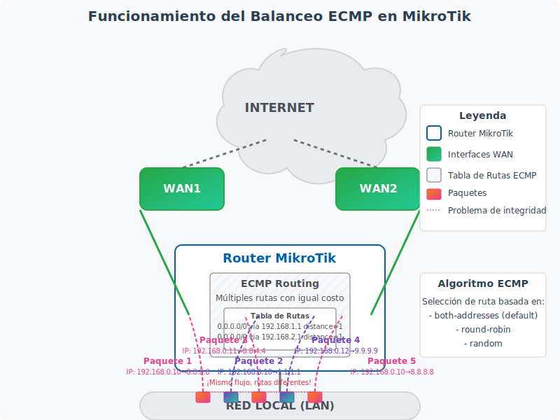

<section id="balanceo-ecmp" class="mb-5">
    <div class="card">
        <div class="card-header bg-primary text-white">
            <h2 class="h4 mb-0">6. Balanceo de Carga con ECMP (Equal Cost Multi-Path)</h2>
        </div>
        <div class="card-body">
            <div id="ecmp-teoria">
                <h3>6.1 Teoría y funcionamiento</h3>
                <p>ECMP (Equal Cost Multi-Path) es un protocolo de enrutamiento que permite distribuir el tráfico a través de múltiples rutas de igual costo. A diferencia del método PCC, ECMP es más simple de configurar pero tiene algunas limitaciones importantes.</p>
                
                <div class="note">
                    <strong>¿Qué es ECMP?</strong> ECMP es una técnica de enrutamiento que permite que un router distribuya el tráfico entre múltiples rutas que tienen el mismo costo (métrica). En RouterOS, esto se implementa simplemente configurando múltiples rutas por defecto con el mismo valor de distancia.
                </div>
                
                <p><strong>Ventajas del balanceo ECMP:</strong></p>
                <ul>
                    <li>Configuración muy sencilla</li>
                    <li>Integrado directamente en el sistema de enrutamiento</li>
                    <li>No requiere reglas de mangle complejas</li>
                    <li>Funciona bien para tráfico UDP y tráfico no sensible a cambios de ruta</li>
                </ul>
                
                <p><strong>Limitaciones del balanceo ECMP:</strong></p>
                <ul>
                    <li>No mantiene la integridad de las conexiones (los paquetes de una misma conexión pueden tomar rutas diferentes)</li>
                    <li>Puede causar problemas con aplicaciones sensibles como VPNs, juegos en línea y streaming</li>
                    <li>No permite una distribución personalizada del tráfico (siempre es equitativa)</li>
                    <li>No es compatible con todas las configuraciones de NAT</li>
                </ul>
                
                <p><strong>Funcionamiento de ECMP:</strong></p>
                <p>El balanceo ECMP funciona a nivel de paquete, no de conexión. Cuando hay múltiples rutas con el mismo costo (distancia) hacia un destino, RouterOS distribuye los paquetes entre estas rutas. Por defecto, RouterOS utiliza un algoritmo basado en el hash de las direcciones IP de origen y destino para determinar qué ruta debe tomar cada paquete.</p>
                
                <div class="diagram-container">
                    
                    <p class="figure-caption">Figura 3: Funcionamiento del balanceo ECMP en MikroTik</p>
                </div>
                
                <div class="table-responsive mt-4">
                    <table class="table table-mikrotik">
                        <thead>
                            <tr>
                                <th>Característica</th>
                                <th>ECMP</th>
                                <th>PCC</th>
                            </tr>
                        </thead>
                        <tbody>
                            <tr>
                                <td>Nivel de operación</td>
                                <td>Nivel de paquete</td>
                                <td>Nivel de conexión</td>
                            </tr>
                            <tr>
                                <td>Complejidad de configuración</td>
                                <td>Baja</td>
                                <td>Media-Alta</td>
                            </tr>
                            <tr>
                                <td>Integridad de conexiones</td>
                                <td>No garantizada</td>
                                <td>Garantizada</td>
                            </tr>
                            <tr>
                                <td>Distribución personalizada</td>
                                <td>No (siempre equitativa)</td>
                                <td>Sí (configurable)</td>
                            </tr>
                            <tr>
                                <td>Compatibilidad con aplicaciones sensibles</td>
                                <td>Baja</td>
                                <td>Alta</td>
                            </tr>
                            <tr>
                                <td>Uso de recursos del router</td>
                                <td>Bajo</td>
                                <td>Medio</td>
                            </tr>
                        </tbody>
                    </table>
                </div>
            </div>
            
            <div id="ecmp-configuracion" class="mt-5">
                <h3>6.2 Configuración paso a paso</h3>
                <p>A continuación, se presenta una guía paso a paso para configurar el balanceo de carga ECMP en un router MikroTik. Este ejemplo asume que tenemos dos conexiones a Internet (WAN1 y WAN2) y una red local (LAN).</p>
                
                <h4 class="mt-4">Paso 1: Identificar y configurar las interfaces</h4>
                <p>Al igual que con PCC, primero identifica las interfaces que utilizarás para cada conexión:</p>
                
                <ul class="steps">
                    <li>
                        <strong>Identificar interfaces:</strong> Usa el siguiente comando para ver las interfaces disponibles:
                        <div class="command">/interface print</div>
                    </li>
                    <li>
                        <strong>Renombrar interfaces (opcional):</strong> Para mayor claridad, puedes renombrar las interfaces:
                        <div class="command">/interface set 0 name=WAN1
/interface set 1 name=WAN2
/interface set 2 name=LAN</div>
                    </li>
                </ul>
                
                <h4 class="mt-4">Paso 2: Configurar direcciones IP</h4>
                <p>Configura las direcciones IP para cada interfaz:</p>
                
                <div class="command"># Configurar WAN1 (ejemplo con DHCP)
/ip address add interface=WAN1 address=dhcp

# Configurar WAN2 (ejemplo con IP estática)
/ip address add interface=WAN2 address=192.168.2.2/24

# Configurar LAN
/ip address add interface=LAN address=192.168.0.1/24</div>
                
                <h4 class="mt-4">Paso 3: Configurar rutas ECMP</h4>
                <p>La clave del balanceo ECMP es configurar múltiples rutas por defecto con el mismo valor de distancia:</p>
                
                <div class="command"># Ruta para WAN1
/ip route add dst-address=0.0.0.0/0 gateway=192.168.1.1 check-gateway=ping distance=1

# Ruta para WAN2 (con la misma distancia que WAN1)
/ip route add dst-address=0.0.0.0/0 gateway=192.168.2.1 check-gateway=ping distance=1</div>
                
                <div class="note">
                    <strong>Nota:</strong> El parámetro <code>distance=1</code> es el mismo para ambas rutas, lo que indica a RouterOS que ambas tienen el mismo costo y deben utilizarse para balanceo de carga.
                </div>
                
                <h4 class="mt-4">Paso 4: Configurar NAT para ambas interfaces WAN</h4>
                <p>Configura el enmascaramiento (NAT) para permitir que los clientes de la red local accedan a Internet a través de ambas conexiones:</p>
                
                <div class="command"># NAT para WAN1
/ip firewall nat add chain=srcnat out-interface=WAN1 action=masquerade

# NAT para WAN2
/ip firewall nat add chain=srcnat out-interface=WAN2 action=masquerade</div>
                
                <h4 class="mt-4">Paso 5: Configurar el algoritmo de balanceo (opcional)</h4>
                <p>Por defecto, RouterOS utiliza un algoritmo basado en el hash de las direcciones IP para distribuir el tráfico. Puedes modificar este comportamiento con el siguiente comando:</p>
                
                <div class="command"># Configurar el algoritmo de balanceo
/ip route rule set use-routing-mark=main gateway-selection-method=round-robin</div>
                
                <p>Opciones disponibles para <code>gateway-selection-method</code>:</p>
                <ul>
                    <li><strong>round-robin</strong>: Distribuye los paquetes de forma secuencial entre las rutas disponibles</li>
                    <li><strong>random</strong>: Selecciona una ruta aleatoria para cada paquete</li>
                    <li><strong>src-address</strong>: Selecciona la ruta basándose en la dirección IP de origen</li>
                    <li><strong>dst-address</strong>: Selecciona la ruta basándose en la dirección IP de destino</li>
                    <li><strong>both-addresses</strong>: Selecciona la ruta basándose en ambas direcciones IP (comportamiento por defecto)</li>
                </ul>
                
                <div class="warning">
                    <strong>Advertencia:</strong> Cambiar el algoritmo de balanceo a <code>round-robin</code> o <code>random</code> puede causar problemas con aplicaciones sensibles, ya que los paquetes de una misma conexión pueden tomar rutas diferentes.
                </div>
                
                <h4 class="mt-4">Paso 6: Configurar failover (opcional)</h4>
                <p>Si deseas que una de las conexiones sea de respaldo (failover) en lugar de balanceo, puedes configurar diferentes valores de distancia:</p>
                
                <div class="command"># Ruta principal (WAN1)
/ip route add dst-address=0.0.0.0/0 gateway=192.168.1.1 check-gateway=ping distance=1

# Ruta de respaldo (WAN2)
/ip route add dst-address=0.0.0.0/0 gateway=192.168.2.1 check-gateway=ping distance=2</div>
                
                <p>Con esta configuración, RouterOS utilizará WAN1 como ruta principal y solo utilizará WAN2 si WAN1 no está disponible.</p>
            </div>
            
            <div id="ecmp-verificacion" class="mt-5">
                <h3>6.3 Verificación y pruebas</h3>
                <p>Una vez configurado el balanceo de carga ECMP, es importante verificar que funciona correctamente:</p>
                
                <h4>Verificar las rutas configuradas</h4>
                <p>Para ver las rutas configuradas y su estado:</p>
                
                <div class="command">/ip route print</div>
                
                <p>Deberías ver ambas rutas por defecto con el mismo valor de distancia (1) y el estado "A" (activo).</p>
                
                <h4>Verificar el uso de ancho de banda</h4>
                <p>Para monitorear el tráfico en cada interfaz WAN:</p>
                
                <div class="command">/interface monitor-traffic WAN1,WAN2</div>
                
                <h4>Prueba de conectividad</h4>
                <p>Realiza pruebas de ping desde dispositivos en la red local para verificar la conectividad:</p>
                
                <div class="command">/ping 8.8.8.8 count=10</div>
                
                <h4>Prueba de failover</h4>
                <p>Para probar que el failover funciona correctamente (si lo has configurado), puedes desconectar temporalmente una de las interfaces WAN y verificar que el tráfico continúa fluyendo a través de la otra interfaz.</p>
                
                <div class="note">
                    <strong>Consejo:</strong> Si experimentas problemas con aplicaciones sensibles al usar ECMP, considera cambiar a balanceo PCC, que mantiene la integridad de las conexiones.
                </div>
                
                <h4>Solución de problemas comunes con ECMP</h4>
                <ul>
                    <li><strong>Problemas con aplicaciones web:</strong> Si experimentas desconexiones o errores en aplicaciones web, es posible que los paquetes de una misma conexión estén tomando rutas diferentes. Considera usar PCC en su lugar.</li>
                    <li><strong>Distribución desigual del tráfico:</strong> Si observas que una interfaz WAN está más cargada que la otra, verifica que ambas rutas tienen el mismo valor de distancia y que ambas están activas.</li>
                    <li><strong>Problemas con VPNs:</strong> Las conexiones VPN suelen ser muy sensibles a cambios de ruta. Si utilizas VPNs, considera usar PCC o configurar reglas específicas para el tráfico VPN.</li>
                </ul>
            </div>
        </div>
    </div>
</section>